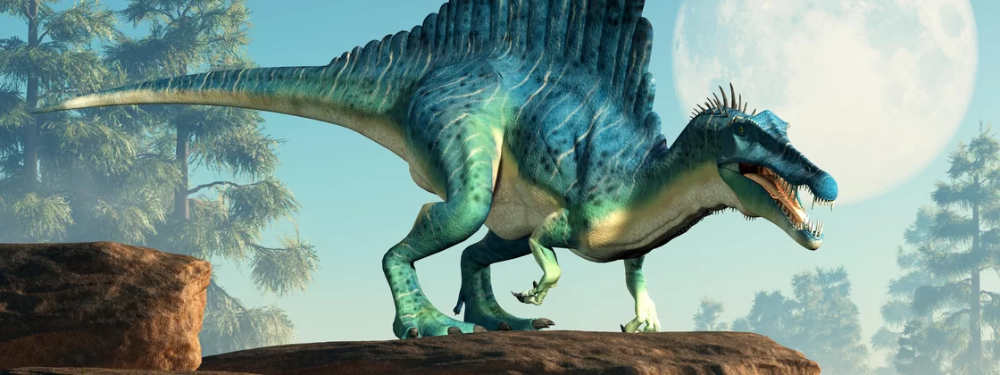

Sobre os dinossauros
Sua história
Os dinossauros são um grupo diversificado de répteis do clado Dinosauria.
Eles apareceram pela primeira vez durante o período Triássico, entre 243 e 233,23 milhões de anos atrás, embora a origem exata e o momento da evolução dos dinossauros sejam objeto de pesquisa ativa.
Eles se tornaram os vertebrados terrestres dominantes após o evento de extinção do Triássico-Jurássico, 201 milhões de anos atrás; seu domínio continuou durante os períodos Jurássico e Cretáceo. A engenharia genética reversa e o registro fóssil demonstram que as aves são dinossauros emplumados modernos, tendo evoluído de terópodes anteriores durante o final do período jurássico.
Como tal, os pássaros foram a única linhagem de dinossauros a sobreviver ao evento de extinção Cretáceo-Paleogeno há 66 milhões de anos. Os dinossauros podem, portanto, ser divididos em dinossauros aviários, ou pássaros; e dinossauros não-aviários, que são todos dinossauros que não sejam pássaros. Este artigo trata principalmente de dinossauros não-aviários.
O entusiasmo persistente do público pelos animais resultou em financiamento significativo para a ciência dos dinossauros, e novas descobertas são regularmente cobertas pela mídia.
As pessoas adoram dinossauros!
Desde que os primeiros fósseis de dinossauros foram reconhecidos no início do século 19, os esqueletos de dinossauros fósseis montados têm sido as principais atrações em museus ao redor do mundo, e os dinossauros se tornaram uma parte duradoura da cultura mundial.
Os grandes tamanhos de alguns grupos de dinossauros, bem como sua natureza aparentemente monstruosa e fantástica, garantiram a aparição regular dos dinossauros em livros e filmes best-sellers, como Jurassic Park.